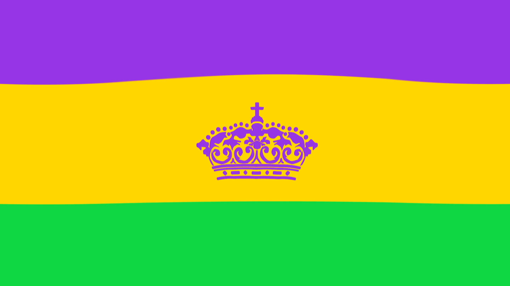

LaToya Cantrell (born April 3, 1972) is an American politician serving as the Mayor of New Orleans,
Louisiana, a
post
she has held since May 7, 2018. Cantrell, a Democrat, is the first black woman to hold the post. Before
becoming
mayor,
Cantrell represented District B on the New Orleans City Council from 2012–2018.
Cantrell was inaugurated as mayor on May 7, 2018, the first woman to hold the position in the city's
history. Once in office, she established a new Office of Youth and Families, with the goal of creating a
strategic plan to address families in crisis in the city. Cantrell also founded a Gun Violence Reduction
Council
tasked with finding solutions to violent crime. Starting with a push to rededicate hotel taxes collected
within the city for city use, Cantrell has focused on her #fairshare initiative to improve city
infrastructure,
public transportation, public parks, and green spaces.As part of that initiative, in October 2018 the City
of New Orleans filed a lawsuit against four opioid manufactures and distributors.
The first record of Mardi Gras being celebrated in Louisiana was at the mouth of the Mississippi River in
what is
now lower Plaquemines Parish, Louisiana, on March 2, 1699. Iberville, Bienville, and their men celebrated it
as
part of an observance of Catholic practice. The date of the first celebration of the festivities in New
Orleans
is unknown. A 1730 account by Marc-Antione Caillot celebrating with music and dance, masking and costuming
(including cross-dressing).In 1833 Bernard Xavier de Marigny de Mandeville, a rich plantation owner of
French
descent, raised money to fund an official Mardi Gras celebration.
The colors traditionally associated with Mardi Gras in New Orleans are green, gold, and purple. The colors
were
first specified in proclamations by the Rex organization during the lead-up to their inaugural parade in
1872,
suggesting that balconies be draped in banners of these colors. It is unknown why these specific colors were
chosen; some accounts suggest that they were initially selected solely on their aesthetic appeal, as opposed
to
any true symbolism.

In New Orleans, costumes and masks are seldom publicly worn by non-Krewe members on the days before Fat Tuesday (other than at parties), but are frequently worn on Mardi Gras. Laws against concealing one's identity with a mask are suspended for the day. Banks are closed, and some businesses and other places with security concerns (such as convenience stores) post signs asking people to remove their masks before entering.
New Orleans Social clubs play a very large part in the Mardi Gras celebration as hosts of many of the parades on or around Mardi Gras. The two main Mardi Gras parades, Zulu and Rex, are both social club parades. Zulu is a mostly African-American club and Rex is mostly Caucasian. Social clubs host Mardi Gras balls, starting in late January. At these social balls, the queen of the parade (usually a young woman between the ages of 18 and 21, not married and in high school or college) and the king (an older male member of the club) present themselves and their court of maids (young women aged 16 to 21), and different divisions of younger children with small roles in the ball and parade, such as a theme-beformal neighborhood Carnival club ball at local bar room.
Rex was organized by New Orleans businessmen in part to put on a spectacle in honor of the New Orleans visit of Grand Duke Alexei Alexandrovich of Russia (remembered locally as "Grand Duke Alexis") during the 1872 Carnival season. Also in the minds of the founders of Rex was the desire to lure tourism and business to New Orleans in the years after the American Civil War. Rex has held more parades in New Orleans than any other parading organization. Its official song is "If Ever I Cease to Love", a quirky tune from the 1870s musical "Bluebeard". This was adopted because the Grand Duke Alexis of Russia had a fondness for the actress who sang the song in the musical, which was playing in New Orleans at the time of the first Rex parade in 1872. It has stuck around since then and is played often during Carnival.
One of the most famous and the most sought after throws, is the Zulu Coconut also known as the Golden Nugget and the Mardi Gras Coconut. The coconut is mentioned as far back as 1910, where they were given in a natural "hairy" state. The coconut was thrown as a cheap alternative, especially in 1910 when the bead throws were made of glass. Before the Krewe of Zulu threw coconuts, they threw walnuts that were painted gold. This is where the name "Golden Nugget" originally came from.